Implantação relatada
A fonte descreve ações executadas e indicadores observados. O resultado pertence ao contexto e ao período estudados.
Estudos de caso / problema, ação e evidência
Como cada estudo enfrenta suas perdas e o que os resultados permitem concluir.
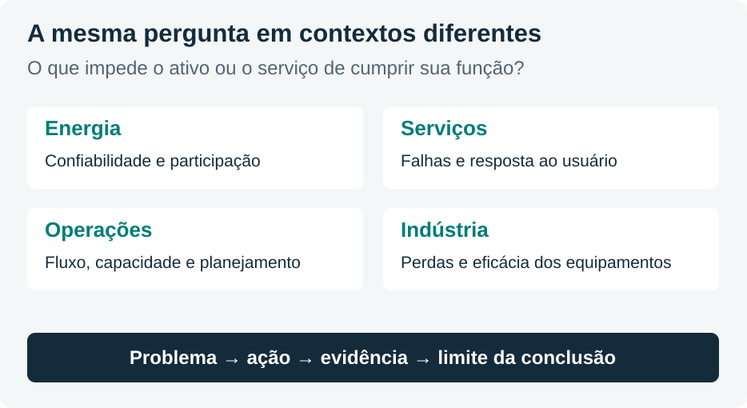
Como ler os estudos
A coleção reúne implantações de TPM, diagnósticos da manutenção, propostas de planejamento e uma discussão sobre tecnologias digitais. As conexões com TPM indicadas neste resumo são interpretações didáticas quando o estudo não implanta o programa completo.
A fonte descreve ações executadas e indicadores observados. O resultado pertence ao contexto e ao período estudados.
A fonte identifica problemas, desenha um processo ou propõe um plano. O benefício esperado ainda exige verificação posterior.
A fonte integra métodos ou explica como dados e tecnologia podem apoiar a gestão. Ilustrações de telas não demonstram, sozinhas, um ganho medido.
Os nove PDFs originais acompanham o pacote. Os links de cada módulo abrem as páginas relevantes. Gráficos redesenhados usam valores dos próprios textos; notas destacam limites e divergências. Não foram acrescentadas estatísticas externas.
Transmissão de energia · Eletronorte
A Regional de Transmissão do Mato Grosso iniciou a TPM em 1998. A dissertação compara o período de 1997 a 2000 e examina os efeitos sobre a produção e os trabalhadores.
O estudo aborda a gestão e as atividades das subestações de Coxipó, Rondonópolis e Sinop. Utiliza documentos, indicadores operacionais, entrevistas e questionários.
Valores da tabela 5, p. 98 do PDF. As quatro séries têm unidades e escalas próprias.
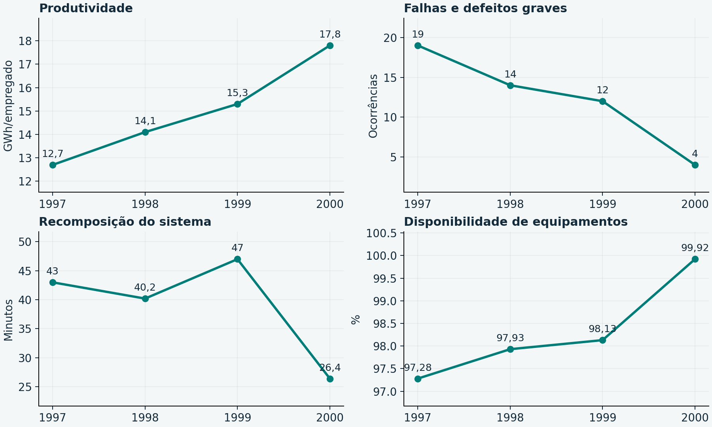
Hospital privado · São Luís, MA
Em um hospital de 50 leitos, cinco trabalhadores atendiam a manutenção. O estudo analisou 45 ordens de serviço dos quatro primeiros meses de 2016.
A frequência de quebras exigia manutenção corretiva e interferia nos serviços. O artigo informa média próxima de 11 corretivas por mês e custo aproximado de R$ 5 mil no contexto estudado.
“Falhas do equipamento” reúne 15 ocorrências; desgaste da peça, 10. Juntas, são 25 de 45 ocorrências, aproximadamente 55,6%.
As demais categorias são erros de operação (7), abuso na utilização (5), mau contato (5) e outras causas (3).
Esses rótulos são categorias do registro. A investigação posterior deve explicar os mecanismos que produziram cada falha.
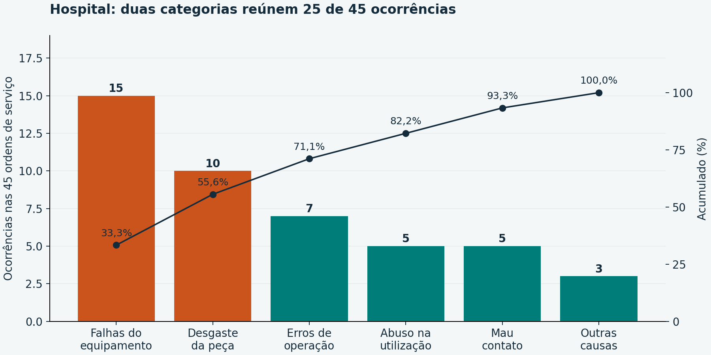
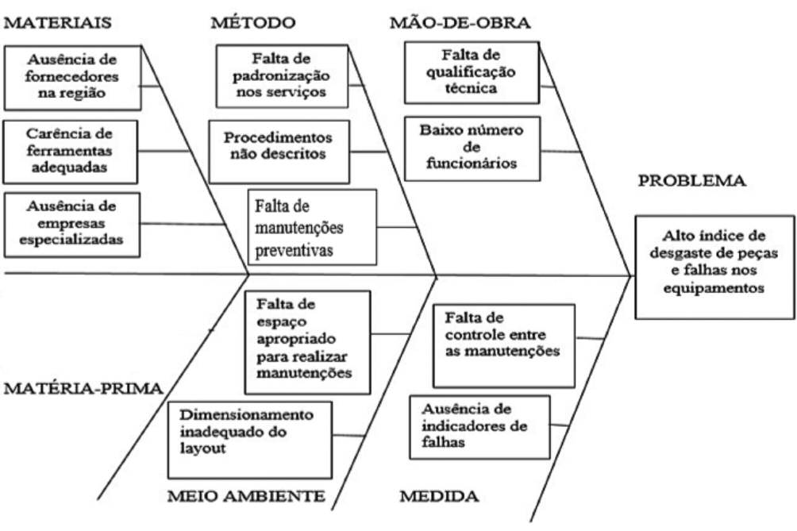
As ações incluem qualificar a equipe, estabelecer procedimentos, desenvolver manutenção preventiva, melhorar a gestão das instalações, implantar indicadores e definir pontos de inspeção.
Hotel · gestão de serviços
O hotel estudado tinha 162 quartos e uma equipe de manutenção de cinco pessoas. Foram analisados registros entre fevereiro e julho de 2017, observações e 45 entrevistas com funcionários e hóspedes.
O texto relaciona maior ocupação a mais chamados. Entretanto, também relata que, acima de 73% de ocupação, a equipe era deslocada para atividades de apoio de outros setores.
O problema reúne maior demanda e menor dedicação às tarefas da manutenção, além das falhas de direcionamento das ordens.
Padronizar os processos, atribuir responsáveis, organizar o calendário preventivo, definir criticidade e controlar terceiros, documentação e treinamento.
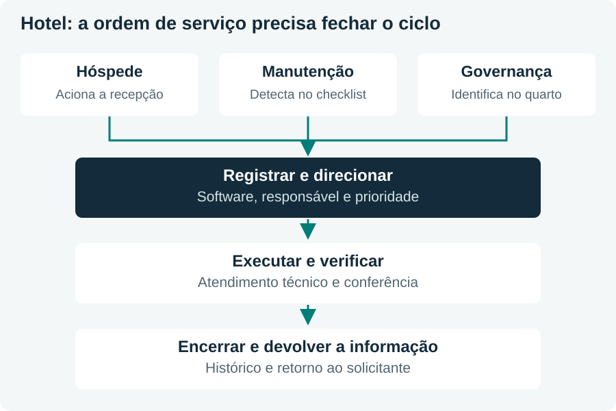
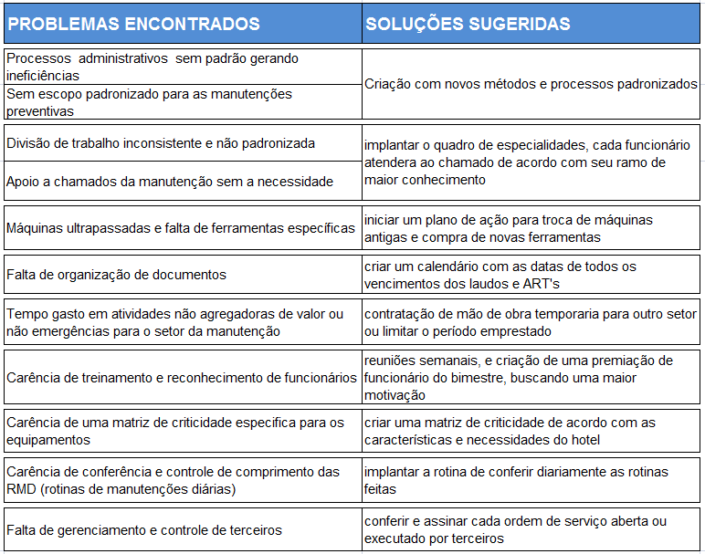
Revisão de aeronaves · balanceamento
A organização governamental estudada precisava conciliar mão de obra qualificada, equipamentos compartilhados e a sequência das tarefas de revisão.
As tarefas eram programadas sem um balanceamento consistente. Havia gargalos, ociosidade e diferenças entre tempos previstos e informados pelas oficinas.
Falta de material também podia impedir o serviço. Abrir mais ordens sem resolver essa restrição aumentaria o trabalho inviável.
210 dias úteis anuais e 202 dias de caminho crítico são parâmetros adotados no estudo.
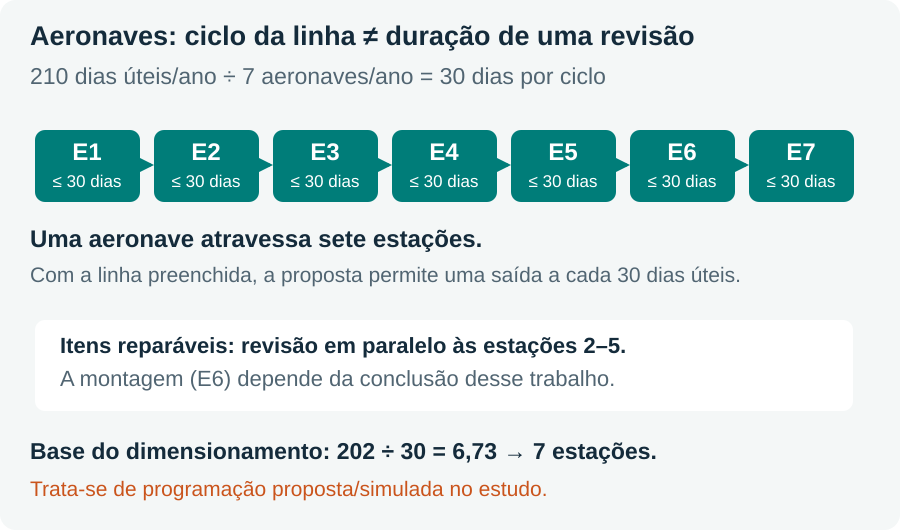
Manutenção agrícola · setor sucroalcooleiro
O estudo acompanha a manutenção da Nova América S.A. Agrícola, unidade de Tarumã, SP. O objetivo é representar o fluxo existente e os responsáveis, utilizando a notação EPC.
A estrutura funcional dificultava visualizar a relação cliente–fornecedor entre processos. Era preciso delimitar a manutenção e compreender suas conexões com a operação agrícola.
Entrevistas com gerente, supervisores, coordenadores e colaboradores permitiram construir e validar o mapa no nível 1.
A EPC representa eventos, funções, regras de decisão e unidades organizacionais. O mapa comunica como os processos se relacionam.
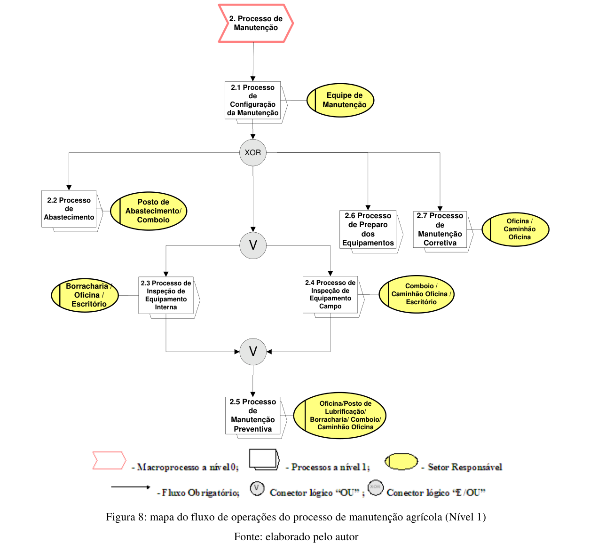
Um entendimento do processo atual: a chegada de um equipamento inicia a configuração, com cadastro, verificação ou elaboração do plano, identificação da frota e liberação. Inspeções posteriores observam condições de uso, lubrificação, quilometragem e horas trabalhadas, conforme o contexto.
Caminhões de cargas frigorificadas
A tese integra TPM/MPT, manutenção centrada em confiabilidade (MCC), FMEA e APPCC para planejar intervenções no transporte frigorificado.
Uma falha deve ser avaliada pelo efeito sobre a função, o transporte e a integridade do alimento. O modelo inclui explicitamente as falhas que comprometem a qualidade dos produtos.
A aplicação ocorre em uma empresa com cerca de 200 caminhões, em 15 encontros de aproximadamente três horas. O trabalho desenvolvido abrange o equipamento de refrigeração e a carreta-baú.
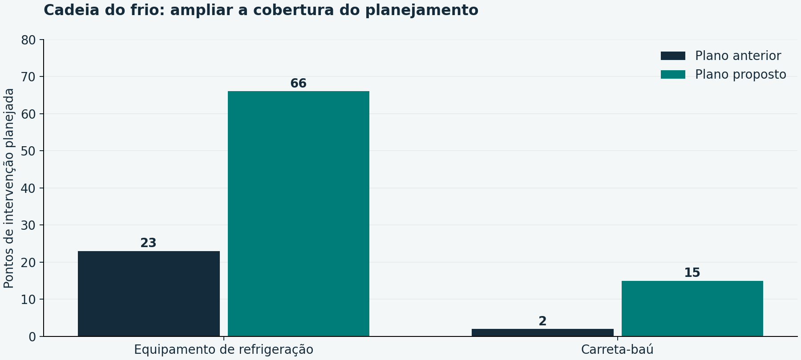
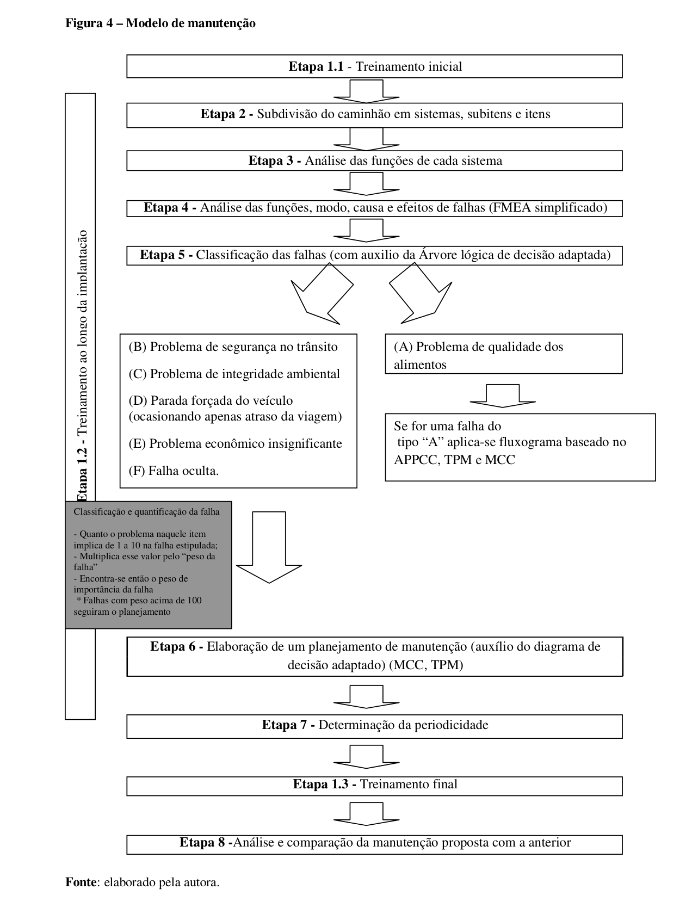
Dois estudos industriais
A usinagem CNC relata ações executadas e uma comparação antes–depois. A indústria química diagnostica o sistema e propõe um modelo de TPM.
O estudo trata da RBD Engineers, na Índia. Apoio da direção e participação dos trabalhadores aparecem como fatores centrais.
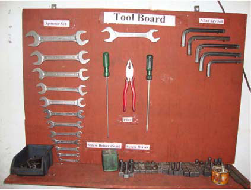
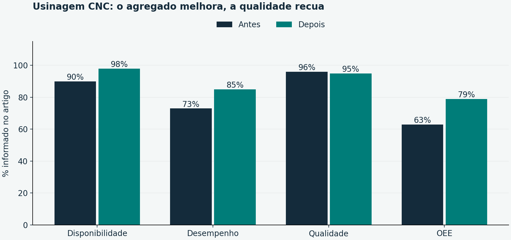
Questionários, entrevistas, observação e registros indicam uma manutenção predominantemente reativa. A integração entre departamentos, a capacitação e a disponibilidade de peças são problemas recorrentes.
O artigo informa OEE próximo de 36,5% no desenvolvimento, arredondado para cerca de 37% no resumo. Também relata baixa participação dos operadores.
Compromisso da direção, política e metas, gestor de TPM, comitês, formação, base 5S e desenvolvimento dos pilares.
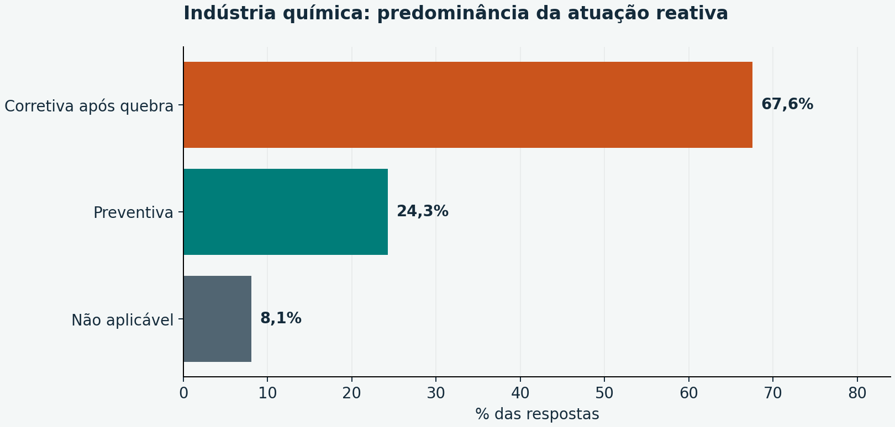
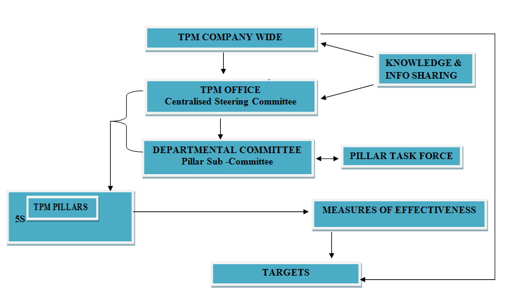
Engenharia de manutenção · Indústria 4.0
O artigo propõe articular coleta digital, indicadores e análise de falhas à manutenção planejada dentro da TPM.
Rastreabilidade, IIoT, armazenamento em nuvem e análise de dados podem apoiar o registro de paradas, a identificação de falhas e a análise dos equipamentos.
A qualidade do apontamento precisa incluir o contexto da ocorrência. Uma tela de indicadores depende de registros coerentes e de interpretação técnica.
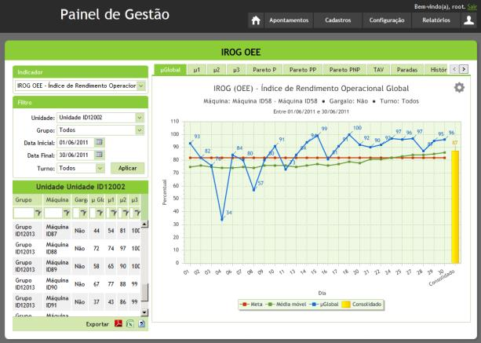
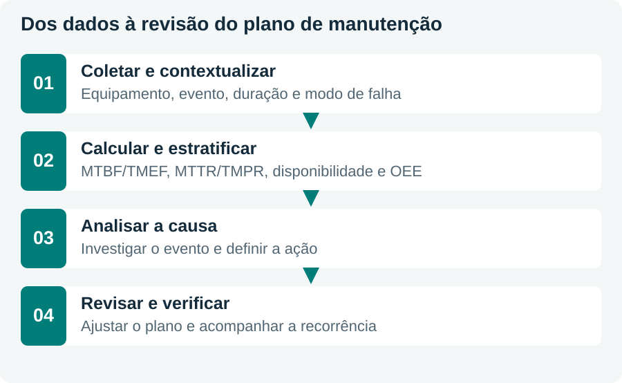
Comparação transversal
Transfira o método com atenção ao contexto: função do ativo, consequências da falha, recursos e qualidade dos dados.
9 estudos exibidos.
| Contexto | Estágio | Método central | Evidência apresentada | Conexão com a TPM |
|---|---|---|---|---|
| Eletronorte | Implantação relatada | TPM, equipes e capacitação | Indicadores de 1997–2000 e práticas de trabalho | Autônoma, treinamento e melhoria |
| Hospital | Diagnóstico + ações | OS, Pareto, Ishikawa e 5W1H | 45 OS; plano ainda sem série posterior | Planejada, treinamento e melhoria |
| Hotel | Diagnóstico + recomendações | Observação, entrevistas e registros | Gargalos de resposta, atribuição e padronização | Administrativa e planejada |
| Aeronaves | Balanceamento proposto | WBS, precedências e estações | Ciclo de 30 dias para meta de 7/ano | Planejamento de recursos e fluxo |
| Agrícola | Mapeamento AS IS | EPC e entrevistas | Mapa de nível 1 com sete processos | Interfaces e controle inicial |
| Cadeia do frio | Modelo de plano aplicado | MCC + FMEA + TPM + APPCC | Cobertura: 23→66 e 2→15 pontos | Autônoma e treinamento |
| CNC | Implantação relatada | 5S, checklists, treinamento e Kaizen | OEE publicado: 63→79%; Q: 96→95% | Pilares aplicados em fases |
| Química | Diagnóstico + modelo | Questionários, dados e desenho da TPM | OEE inicial ≈36,5%; sem medição posterior | Direção, comitês, 5S e pilares |
| Indústria 4.0 | Proposta conceitual | Coleta, indicadores e análise de falhas | Mecanismo de apoio; ganhos esperados | Engenharia e manutenção planejada |
Na transmissão, importa fornecer energia. No hospital, preservar a condição de atendimento. Na cadeia do frio, manter o transporte e a integridade da carga.
Pareto prioriza; Ishikawa organiza hipóteses; EPC revela interfaces; balanceamento organiza o fluxo; MCC/FMEA examinam consequências e falhas.
Um mapa novo ou um plano mais detalhado são entregas relevantes. Para avaliar efeitos operacionais, acompanhe indicadores após a execução das ações.
Qual problema existia, qual ação foi executada, como o resultado foi medido e até onde a evidência permite concluir?
Estudo e discussão
As primeiras 18 recuperam os estudos. As seis finais propõem aplicação e integração entre os contextos.
Por exemplo: produtividade de 12,70 para 17,80 GWh/empregado; falhas graves de 19 para 4; recomposição de 43,0 para 26,4 min. A disponibilidade dos equipamentos também sobe de 97,28% para 99,92%.
Porque o contexto da implantação, especialmente a liderança e as condições de gestão e participação, influencia a reprodução do resultado.
Falhas do equipamento (15) e desgaste da peça (10). Juntas, 25/45 = 55,56%, aproximadamente 55,6%.
Não. Apresenta diagnóstico e plano 5W1H; o apêndice mostra ações pendentes ou em andamento, sem série posterior de resultados.
Ordens sem direcionamento e tempo de resposta, atrasos no encerramento, tarefas escolhidas pelo funcionário e falta de padronização, entre outros.
Aumentam os chamados e a equipe também pode ser deslocada para apoiar outros setores. Isso reduz sua dedicação à manutenção justamente em um contexto de maior demanda.
Divide 210 dias úteis anuais pela meta de sete aeronaves por ano: 210/7 = 30 dias por ciclo.
Não. Cada aeronave atravessa as sete estações. A saída por ciclo corresponde à cadência da linha preenchida, com execução simultânea em diferentes estações.
Um mapa AS IS no nível 1, representando sete processos e suas interfaces e responsáveis, com notação EPC.
Verificação do plano do fabricante, cadastro e complementação dos dados, elaboração ou atualização do plano, identificação da frota e liberação para uso.
TPM/MPT, MCC, FMEA e APPCC. O modelo considera explicitamente a falha que compromete a qualidade do produto transportado.
A cobertura passa de 23 para 66 pontos no equipamento de refrigeração e de 2 para 15 na carreta-baú. Isso descreve pontos planejados, não uma quantidade comprovada de falhas evitadas.
OEE: 63% para 79%, aumento de 16 pontos percentuais. Qualidade: 96% para 95%, queda de um ponto percentual.
A tabela muda o tempo de ciclo teórico de 3 para 7,5 min e a quantidade produzida de 160 para 72 peças. É necessário conhecer os produtos, condições e critérios de medição.
É uma medida da situação diagnosticada. O artigo propõe o modelo, sem apresentar uma medição posterior de OEE após sua implantação.
Compromisso da direção, política e metas, responsável pela TPM, comitês e capacitação, com base 5S e desenvolvimento dos pilares.
Permitem contextualizar paradas, calcular indicadores, investigar causas e revisar tarefas e periodicidades do plano, desde que o registro e a interpretação sejam consistentes.
A tela é uma forma de visualização. Para demonstrar ganho, são necessários definição consistente dos dados, ações executadas e avaliação da evolução dos resultados.
O objetivo de organização e visibilidade pode ser mantido, adaptando áreas, equipamentos, fluxos e responsabilidades ao serviço. As tarefas devem respeitar capacitação e procedimentos do contexto hospitalar.
Por exemplo, tempo entre abertura e atendimento, tempo até solução e proporção de ordens reabertas, com definições consistentes e comparação de períodos que considerem a ocupação. São sugestões de avaliação, não resultados do estudo.
Usar o mapa para identificar onde ocorrem inspeções, decisões e transferências de informação; depois atribuir tarefas e responsabilidades conforme as consequências das falhas e os recursos disponíveis.
O aumento de cerca de 187% refere-se à contagem de pontos planejados. Confiabilidade é outro objeto de avaliação e exigiria observar a ocorrência de falhas e o desempenho em uso.
Os casos têm funções e resultados diferentes, como fornecimento de energia, resposta ao hóspede e proteção da carga. É necessário escolher indicadores ligados à função e às consequências da falha, mantendo o OEE onde seu escopo for adequado.
Executar a ação e acompanhar indicadores definidos antes e depois, com período, escopo e condições documentados. Atribuir causalidade exige ainda considerar mudanças concorrentes e limites do desenho do estudo.
Rastreabilidade do resumo
Cada documento conserva seu título e autoria. As indicações de páginas usam a contagem do PDF, que pode diferir da numeração impressa.
eletronorte
Palmeira, Jorge Nassar (2001).
Dissertação de mestrado, FGV/EBAPE.
Leitura dirigida: PDF, p. 79–110; resultados 98–103.
Abrir documento originalhospital
Gerônimo, M. S.; Leite, B. C. C.; Oliveira, R. D. (2017).
Exacta, 15(4), 167–183. DOI: 10.5585/ExactaEP.v15n4.7144.
Leitura dirigida: PDF, p. 13–18.
Abrir documento originalhotel
Silveira, D. A. C.; Mallab, G. L.; Guimarães, R. S.; Pires, M. L.
Estudo com dados de 2017.
Leitura dirigida: PDF, p. 8–15.
Abrir documento originalaeronaves
Machado, M. C.; Urbina, L. M. S.; Eller, M. A. G. (2010).
XXX ENEGEP.
Leitura dirigida: PDF, p. 6–13.
Abrir documento originalagricola
Garcia, M. G.; Arraes, N. A. M.; Vilela Filho, L. R.; Pinheiro, M. I. (2012).
XXXII ENEGEP.
Leitura dirigida: PDF, p. 9–14.
Abrir documento originalfrio
Pelegrini, Graciela Aparecida (2013).
Tese de doutorado, PPGEP/UFRGS.
Leitura dirigida: PDF, p. 63–75; 76–121.
Abrir documento originalcnc
Singh, R.; Gohil, A. M.; Shah, D. B.; Desai, S. (2013).
Procedia Engineering, 51, 592–599. DOI: 10.1016/j.proeng.2013.01.084.
Leitura dirigida: PDF, p. 2–8.
Abrir documento originalquimica
Mwanza, B. G.; Mbohwa, C. (2015).
Procedia Manufacturing, 4, 461–470. DOI: 10.1016/j.promfg.2015.11.063.
Leitura dirigida: PDF, p. 3–10.
Abrir documento originaldigital
Almeida, B. G.; Fabro, E. (2019).
Scientia cum Industria, 7(2), 23–39. DOI: 10.18226/23185279.v7iss2p23.
Leitura dirigida: PDF, p. 9–16.
Abrir documento originalO resumo reorganiza os estudos em oito módulos e usa apenas os nove PDFs fornecidos. A revisão teórica extensa das teses foi condensada para priorizar problema, método, aplicação, resultados e limites. Conexões com os pilares e questões de aplicação estão marcadas como leitura didática.
Eletronorte: para as séries apresentadas, adotou-se a tabela 5. O custo de 2000 diverge entre a narrativa (US$ 12,04 milhões) e essa tabela (US$ 12,40 milhões), razão pela qual não se construiu um gráfico de custos. Aeronaves: a capacidade inicial aparece com valores diferentes em trechos do texto; a proposta não é tratada como ganho observado. Caminhões: a divisão dos 66 pontos entre motorista e manutenção diverge entre as p. 108 e 120; usa-se o total consistente. CNC: preservam-se os indicadores da tabela e destaca-se a queda da qualidade e a alteração do tempo de ciclo. Química: conserva-se o OEE como valor aproximado informado; os percentuais de causas de parada divergentes entre resumo e corpo não são agregados.
Normas e referências regulatórias mencionadas nos documentos pertencem às respectivas datas de publicação. Este material resume os estudos e não atualiza exigências normativas. Origem das imagens e dos gráficos: creditos.md.